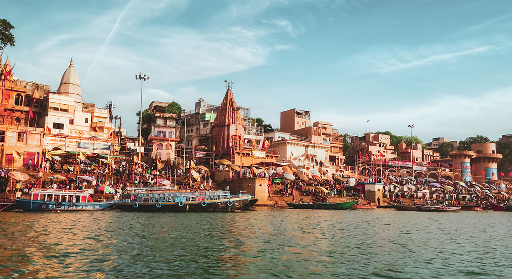
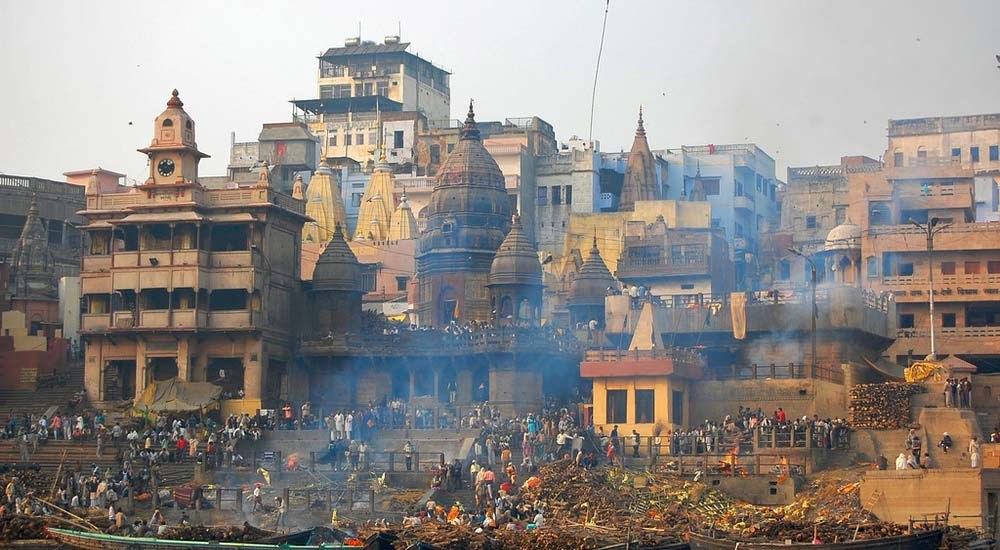
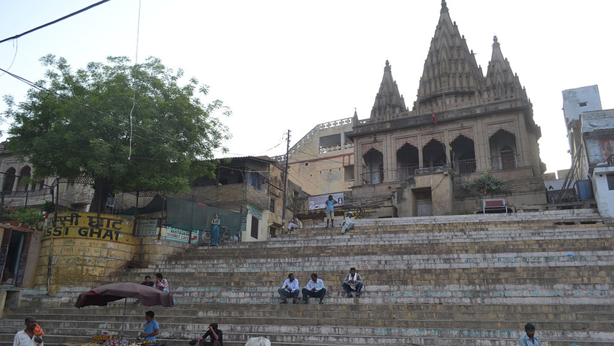
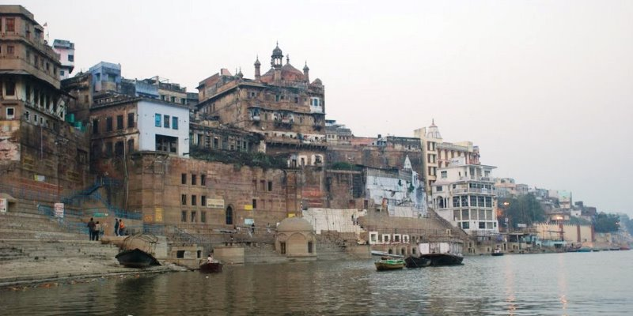
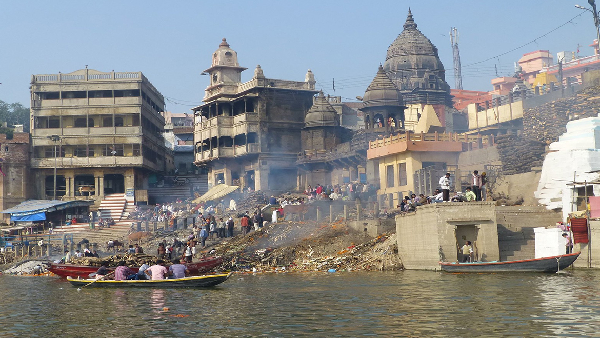

Varanasi, also known as Kashi, is home to over 80 ghats along the Ganges River. Each ghat has its own significance and history, making Varanasi a spiritual and cultural hub.
Famous Ghats of Varanasi
Dasaswamedh Ghat
Dasaswamedh Ghat is one of the oldest and most famous ghats in Varanasi. It is known for the daily Ganga Aarti and is believed to be the spot where Lord Brahma performed the Dasa Ashvamedha sacrifice. The vibrant energy and cultural significance make it a must-visit.
It is said that Lord Brahma created this ghat to welcome Lord Shiva. The name Dasaswamedh means "ten sacrifices," referring to the ten horse sacrifices performed by Lord Brahma.
Manikarnika Ghat
Manikarnika Ghat is the primary cremation ghat in Varanasi. It is considered auspicious to be cremated here, as it is believed to provide moksha (liberation from the cycle of rebirth). The perpetual fire, known as the eternal flame, has been burning for centuries, symbolizing the cycle of life and death.
According to Hindu mythology, Goddess Parvati dropped her earring (Manikarnika) here while bathing, leading to the creation of a sacred pool. It is believed that a person who is cremated at Manikarnika Ghat attains liberation.
Assi Ghat
Assi Ghat is a popular ghat known for its scenic beauty. It is a favorite spot for both locals and tourists to relax and witness the Ganga Aarti in the evening. The ghat is named after the Assi River, which meets the Ganges at this point. Assi Ghat is also known for hosting cultural events and festivals.
The ghat is associated with the legendary sage Assi, who performed a severe penance here to please Lord Shiva. It is a serene place for meditation and spiritual reflection.
Panchganga Ghat
Panchganga Ghat is so named because it is believed to be the confluence of five sacred rivers. Pilgrims visit this ghat to perform rituals and take a dip in the holy waters. It offers a serene atmosphere for spiritual contemplation and reflection.
The five rivers associated with Panchganga Ghat are Ganges, Saraswati, Yamuna, Kirana, and Dhupapapa. A bath in these sacred waters is believed to wash away sins.
Harishchandra Ghat
Harishchandra Ghat is one of the oldest ghats in Varanasi dedicated to the legendary king Harishchandra known for his unwavering truthfulness. It is primarily used for cremation and is less crowded than other ghats.
The ghat is named after King Harishchandra, who worked as a cremator here while facing numerous trials and tribulations. It is a place to contemplate the transient nature of life.
Ganga Aarti
Ganga Aarti is a spiritual and mesmerizing ritual performed daily at the ghats of Varanasi. Devotees and tourists gather to witness the spectacular ceremony that involves synchronized chanting, ringing of bells, and the offering of lamps to the Ganges.
The Aarti takes place at prominent ghats such as Dasaswamedh Ghat and Assi Ghat, creating a mystical ambiance as the river reflects the flickering lights of numerous lamps. The rhythmic hymns and the grandeur of the ritual leave a lasting impression on visitors.
Devotees believe that participating in Ganga Aarti purifies the soul and brings blessings. The enchanting atmosphere and the devotion of the worshippers make it a spiritual experience unlike any other.
Significance of the Ganges River
The Ganges, considered one of the holiest rivers in Hinduism, holds immense spiritual significance. It is believed to purify the soul and grant salvation. The river is worshipped as the goddess Ganga, and a dip in its waters is thought to wash away sins.
Varanasi, situated on the banks of the Ganges, is a pilgrimage site where devotees come to perform rituals, ceremonies, and seek spiritual enlightenment. The river's sacredness is intertwined with the cultural and religious heritage of India.
Throughout the year, pilgrims and tourists flock to the ghats of Varanasi to experience the divine connection with the Ganges, making it a timeless symbol of spirituality and purity.